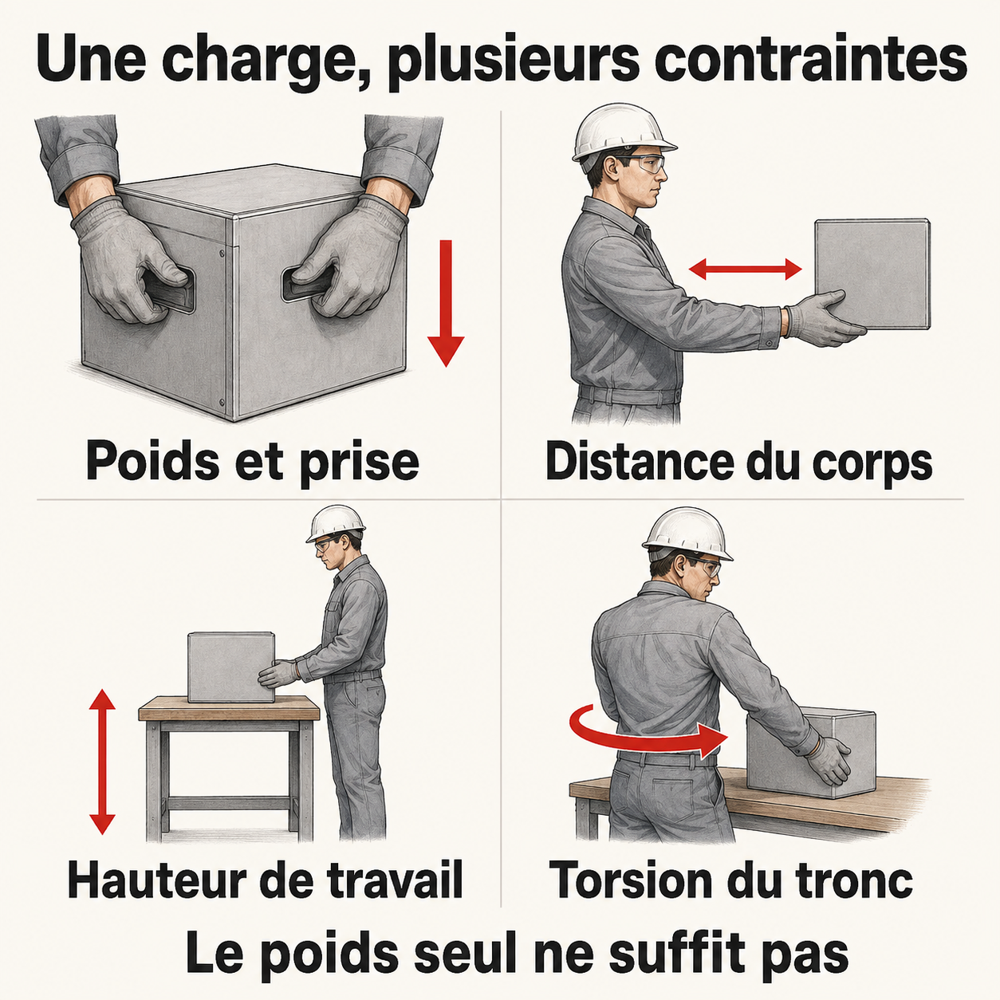

Manutention (pour toi)
Tu soulèves, tu pousses, tu tires, tu portes. C'est presque chaque quart en mine. Cette page te donne les gestes qui protègent ton dos et tes épaules sur le long terme.
À quoi sert cette page
T'aider à reconnaître ce qui peut te blesser quand tu manipules une charge, et te donner des gestes concrets pour t'en sortir sans douleur.
Contenu
Une charge, plusieurs contraintes
{kind=link}

Toucher l'image pour l'agrandirLe poids seul ne suffit pas à évaluer le risque. La fréquence, la durée et l'environnement de travail comptent aussi. Ces repères ne constituent pas une évaluation complète de la tâche.
Lire la version texte — les quatre repères
- Poids et prise : considérer la masse, la forme, la stabilité et la facilité à saisir la charge.
- Distance du corps : une charge éloignée augmente les contraintes, même si son poids ne change pas.
- Hauteur de travail : examiner la hauteur de prise et de dépôt, notamment au sol ou en hauteur.
- Torsion du tronc : repérer les situations où le corps doit pivoter ou se tordre pendant la manutention.
Sources des repères : CCHST — Levage, généralités et facteurs de manutention. Vérifiés le 6 septembre 2026 pour cette section uniquement.
La règle simple
- Garde la charge proche du corps.
- Plie les genoux, pas le dos.
- Pas de torsion : tourne avec les pieds.
- Regarde devant.
- Si c'est trop lourd, demande de l'aide.
Points de vigilance
La manutention peut contribuer à des TMS. Le risque dépend de la tâche : poids et prise, position de la charge, posture, répétition et durée. Les difficultés et douleurs doivent conduire à examiner la situation de travail, sans attendre une durée d'arrêt supposée.
Source : CCHST — Levage, généralités.
Application terrain
Cas typiques en mine, comment t'y prendre
| Situation | Geste |
|---|---|
| Sac de ciment (40 kg) | Demande un coup de main, ou utilise le chariot |
| Boulons d'ancrage en boîte | Casse la charge : prends 2-3 à la fois, pas la boîte complète |
| Tuyaux de ventilation | À deux personnes, signale tes gestes à ton partenaire |
| Chargement au scoop | Utilise les commandes, jamais tes bras pour pousser un blocage |
| Rangement à hauteur d'épaule | Monte sur un marche-pied stable plutôt qu'à bout de bras |
| Charge au sol | Plie les genoux, garde le dos droit |
Aides à examiner selon la tâche : chariot, palan et autres équipements de manutention adaptés. Leur choix et leur utilisation demandent une évaluation du travail réel.
À éviter
- Soulever en tordant le tronc.
- Charger plus que ta capacité parce que tu es "pressé".
- Travailler bras tendus au-dessus de la tête longtemps.
- Ignorer une douleur naissante.
- Faire seul ce qui se fait à deux.
Pour aller plus loin
- Postures (travailleurs)
- Travail répétitif (travailleurs)
- Si tu as déjà mal : parle à ton conseiller SST ou à ton médecin du travail.
Pages qui pointent ici (17)
- 🏠 Wiki Ergonomie, mines Ergonomie
- 👷 Bienvenue, travailleur Ergonomie
- 🚀 Démarrage rapide - Direction, RH Ergonomie
- Anatomie et biomécanique du dos Ergonomie
- Appréciation du risque, méthodes Sécurité industrielle
- art-166-RSST Ergonomie
- Articulations Ergonomie
- Équipements de protection Sécurité industrielle
- Ergonomie (définition) Ergonomie
- Évaluation des risques de TMS Ergonomie
- Manutention manuelle Ergonomie
- Outils d'évaluation ergonomique Ergonomie
- Postures contraignantes Ergonomie
- Programme de prévention TMS Ergonomie
- Risques sectoriels et bonnes pratiques Sécurité industrielle
- TMS par région anatomique Ergonomie
- Vibrations Ergonomie